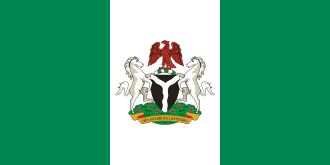

About Me
My name is Akanimo Jackson. I'm from Nigeria and i live in Akwa Ibom state. I am currently a student of Byu. I am still a single man living alone. I love biking and I love to learn new things.
Akwa Ibom, Nigeria

Nigeria Flag
Nigeria is the most populous country in Africa and is located in West Africa along the Atlantic Ocean. It is home to a wide variety of ecosystems, from coastal mangroves and tropical rainforests to vast savannas and highlands. Nigeria is rich in natural resources and cultural diversity, with more than 250 ethnic groups and over 500 languages spoken. The country is best known for its vibrant music, Nollywood film industry, diverse cuisine, and warm hospitality.